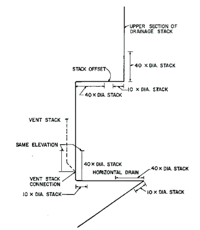

Material | Standard |
Material | Standard |
Acrylonitrile butadiene styrene (ABS) plastic pipe in IPS diameters, including Schedule 40, DR 22 (PS 200) and DR 24 (PS 140); with a solid, cellular core or composite wall
a | ASTM D 2661; ASTM F 628; ASTM F 1488; CSA B181.1 |
Brass pipe | ASTM B 43 |
Cast-iron pipe | ASTM A 74; ASTM A 888; CISPI 301 |
Copper or copper-alloy pipe | ASTM B 42; ASTM B 302 |
Copper or copper-alloy tubing (Type K or L) | ASTM B 75; ASTM B 88; ASTM B 251 |
Ductile iron | AWWA C151 |
Galvanized steel pipe | ASTM A 53 |
Polyvinyl chloride (PVC) plastic pipe in IPS diameters, including Schedule 40, DR 22 (PS 200), and DR 24 (PS 140); with a solid, cellular core or composite wall
a | ASTM D 2665; ASTM F 891; ASTM F 1488; CSA B181.2 |
Polyvinyl chloride (PVC) plastic pipe with a 3.25-inch O.D. and a solid, cellular core or composite wall
a | ASTM D 2949; ASTM F 1488 |
Stainless steel drainage systems, Types 304 and 316L | ASME A112.3.1 |
Material | Standard |
Cast-iron pipe | ASTM A 74; ASTM A 888; CISPI 301 |
Copper or copper alloy tubing (Type K or L) | ASTM B 75; ASTM B 88; ASTM B 251 |
Ductile iron | AWWA C151 |
Polyolefin pipe | ASTM F 1412; CSA B181.3 |
Polyvinyl chloride (PVC) plastic pipe in IPS diameters, including Schedule 40, DR 22 (PS 200), and DR 24 (PS 140); with a solid, cellular core or composite wall
a | ASTM D 2665; ASTM F 891; ASTM F 1488; CSA B181.2 |
Stainless steel drainage systems, Type 316L | ASME A112.3.1 |
Material | Standard |
Material | Standard |
Cast-iron pipe | ASTM A 74; ASTM A 888; CISPI 301 |
Chlorinated polyvinyl chloride (CPVC) plastic a | ASTM F 437; ASTM F 438; ASTM F 439 |
Copper or copper-alloy tubing (Type K or L) | ASTM B 75; ASTM B 88; ASTM B 251 |
Ductile iron | AWWA C151 |
Galvanized steel pipe | ASTM A 53; ASTM A 123 |
Polyvinyl chloride (PVC) plastic pipe (Type DWV, SDR26, SDR35, SDR41, PS50 or PS100)
a | ASTM D 2665; ASTM D 3034; ASTM F 891; CSA B182.2; CSA B182.4; CSA B181.2 |
Stainless steel drainage systems, types 304 and 316L | ASME A112.3.1 |
Material | Standard |
Material | Standard |
Acrylonitrile
butadiene styrene (ABS) plastic pipe in IPS diameters
a | ASTM D 2661; ASTM F 628; CSA B181.1 |
Acrylonotrile butadiene styrene (ABS) plastic pipe in sewer and drain diameters | ASTM D 2751 |
Brass | ASTM B 62 |
Cast iron | ASME B16.4; ASME B16.12; ASTM A 74; ASTM A 888; CISPI 301 |
Chlorinated polyvinyl chloride (CPVC) plastic a | ASTM F 437; ASTM F 438; ASTM F 439 |
Copper or copper alloy | ASME B16.15; ASME B16.18; ASME B16.22; ASME B16.23; ASME B16.26; ASME B16.29 |
Galvanized steel | ASTM A 153; ASME B16.3 |
Ductile iron | AWWA C110 |
Malleable iron | ASME B16.3 |
Polyethylene (PE) plastic pipe a | ASTM F 2306 / F 2306M |
Polyvinyl chloride (PVC) plastic in IPS diameters a | ASTM D 2665; ASTM F 1866 |
Polyvinyl chloride (PVC) plastic pipe in sewer and drain diameters
a | ASTM D 3034 |
Polyvinyl chloride (PVC) plastic pipe with a 3.25-inch O.D.
a | ASTM D 2949 |
Stainless steel drainage systems, Types 304 and 316L | ASME A112.3.1 |
Size (inches) | Minimum Slope (inch per foot) |
2 1/2 or less | 1/4 |
3 to 6 | 1/8 |
8 or larger | 1/16 |

Pipe Sizes (inches) | Inside Diameter (inches) | Length (inches) | Minimum Weight Each |
2 | 2 1/4 | 4 1/2 | 1 pound |
3 | 3 1/4 | 4 1/2 | 1 pound 12 ounces |
4 | 4 1/4 | 4 1/2 | 2 pounds 8 ounces |
Pipe Sizes (inches) | Minimum Weight Each |
1 1/4 | 6 ounces |
1 1/2 | 8 ounces |
2 | 14 ounces |
2 1/2 | 1 pound 6 ounces |
3 | 2 pounds |
4 | 3 pounds 8 ounces |
Type of Fitting Pattern | Change in Direction | ||
Horizontal to vertical | Vertical to horizontal | Horizontal to horizontal | |
Type of Fitting Pattern | Change in Direction | ||
Horizontal to vertical | Vertical to horizontal | Horizontal to horizontal | |
Sixteenth bend | X | X | X |
Eighth bend | X | X | X |
Sixth bend | X | X | X |
Quarter bend | X | X
a | X
a |
Short sweep | X | X
a, b | X
a |
Long sweep | X | X | X |
Sanitary tee | X
c | – | – |
Wye | X | X | X |
Combination wye and eighthbend | X | X | X |
Fixture Type | Drainage Fixture Unit Value as Load Factors | Minimum Size of Trap (inches) |
Fixture Type | Drainage Fixture Unit Value as Load Factors | Minimum Size of Trap (inches) |
Automatic clothes washers, commercial
a, g | 3 | 2 |
Automatic clothes washers, residential
g | 2 | 2 |
Bathroom group as defined in Section 202
f | 5 | – |
Bathtub
b
(with or without overhead shower or whirlpool attachments) | 2 | 1 1/2 |
Bidet | 1 | 1 1/4 |
Combination sink and tray | 2 | 1 1/2 |
Dental lavatory | 1 | 1 1/4 |
Dental unit or cuspidor | 1 | 1 1/4 |
Dishwashing machine
c
, domestic | 2 | 1 1/2 |
Drinking fountain | 1/2 | 1 1/4 |
Emergency floor drain | 0 | 2 |
Floor drains | 2
h | 3 |
Floor sinks | Note h | 2 |
Hand wash sinks and lavatories (circular or multiple) each faucet | 2 | 1 1/2 |
Kitchen sink, domestic | 2 | 2 |
Kitchen sink, domestic with food waste disposer and/or dishwasher | 2 | 2 |
Laundry tray (1 or 2 compartments) | 2 | 2 |
Lavatory | 1 | 1 1/4 |
Multiple (gang) shower (based on the total flow rate through shower heads and body sprays) Flow rate: | ||
5.7 gpm or less | 2 | 2 |
Greater than 5.7 gpm to 12.3 gpm | 3 | 2 |
Greater than 12.3 gpm to 25.8 gpm | 5 | 3 |
Greater than 25.8 gpm to 55.6 gpm | 6 | 4 |
Shower | 2 | 2 |
Sink | 2 | 2 |
Urinal | 4 | Note d |
Urinal, 1 gallon per flush or less | 2
e | Note d |
Urinal, nonwater supplied | 1/2 | Note d |
Water closet, flushometer, tank, public or private | 4
e | Note d |
Fixture Drain or Trap Size (inches) | Drainage Fixture Unit Value |
1 1/4 | 1 |
1 1/2 | 2 |
2 | 3 |
2 1/2 | 4 |
3 | 5 |
4 | 6 |
Diameter of Pipe (inches) | Maximum Number of Drainage Fixture Units Connected to any Portion of the Building Drain or the Building Sewer, Including Branches of the Building Drain a | |||
Slope per foot | ||||
1/16 inch | 1/8 inch | 1/4 inch | 1/2 inch | |
Diameter of Pipe (inches) | Maximum Number of Drainage Fixture Units Connected to any Portion of the Building Drain or the Building Sewer, Including Branches of the Building Drain a | |||
Slope per foot | ||||
1/16 inch | 1/8 inch | 1/4 inch | 1/2 inch | |
1 1/4 | — | — | 1 | 1 |
1 1/2 | — | — | 3 | 3 |
2 | — | — | 21 | 26 |
2 1/2 | — | — | 24 | 31 |
3 | — | 36 | 42 | 50 |
4 | — | 180 | 216 | 250 |
5 | — | 390 | 480 | 575 |
6 | — | 700 | 840 | 1,000 |
8 | 1,400 | 1,600 | 1,920 | 2,300 |
10 | 2,500 | 2,900 | 3,500 | 4,200 |
12 | 3,900 | 4,600 | 5,600 | 6,700 |
15 | 7,000 | 8,300 | 10,000 | 12,000 |
Diameter of Pipe (inches) | Total for horizontal branch | Maximum Number of Drainage Fixture Units (dfu) | |
Stacks b | |||
Total for Stack of Three Branch Intervals or Less | Total for Stack Greater than Three Branch Intervals | ||
Diameter of Pipe (inches) | Total for horizontal branch | Maximum Number of Drainage Fixture Units (dfu) | |
Stacks b | |||
Total for Stack of Three Branch Intervals or Less | Total for Stack Greater than Three Branch Intervals | ||
1 1/2 | 3 | 4 | 8 |
2 | 6 | 10 | 24 |
2 1/2 | 12 | 20 | 42 |
3 | 20 | 48 | 72 |
4 | 160 | 240 | 500 |
5 | 360 | 540 | 1,100 |
6 | 620 | 960 | 1,900 |
8 | 1,400 | 2,200 | 3,600 |
10 | 2,500 | 3,800 | 5,600 |
12 | 2,900 | 6,000 | 8,400 |
15 | 7,000 | Note c | Note c |
Diameter of the Discharge Pipe (inches) | Capacity of Pump or Ejector (gpm) |
2 | 21 |
2 1/2 | 30 |
3 | 46 |
Stack Size (inches) | Connection Size | ||
1 1/2 | 2" | ||
Stack Size (inches) | Connection Size | ||
1 1/2 | 2" | ||
1 1/2
a | 1 | or | 0 |
2
a | 2 | or | 1 |
2
b | 1 | and | 1 |
3
a | 4 | or | 2 |
3
b | 2 | and | 2 |
4
a | 8 | or | 4 |
4
b | 4 | and | 4 |
Stack Size (inches) | Connection Size | |||
3/4" | 1" | 1 1/4" | 1 1/2" | |
1 1/2
a | 3 or | 2 or | 1 | — |
1 1/2
b | 2 and | 1 | — | — |
2
a | 6 or | 3 or | 2 or | 1 |
2
b | 3 and | 2 | — | — |
2
b | 2 and | 1 and | 1 | — |
2
b | 1 and | 1 and | — | 1 |
3
a | 15 or | 7 or | 5 or | 3 |
3
b | 1 and | 1 and 5 and | 2 and | 2 1 |